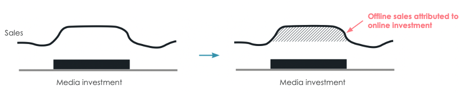
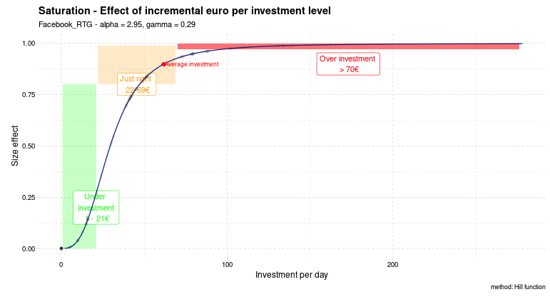
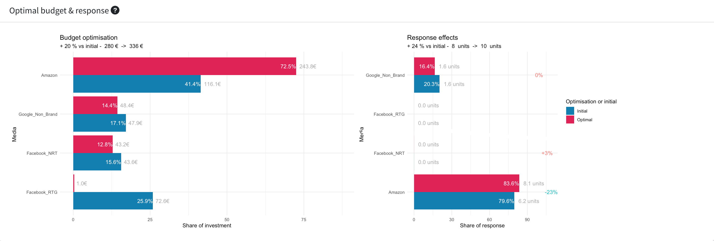
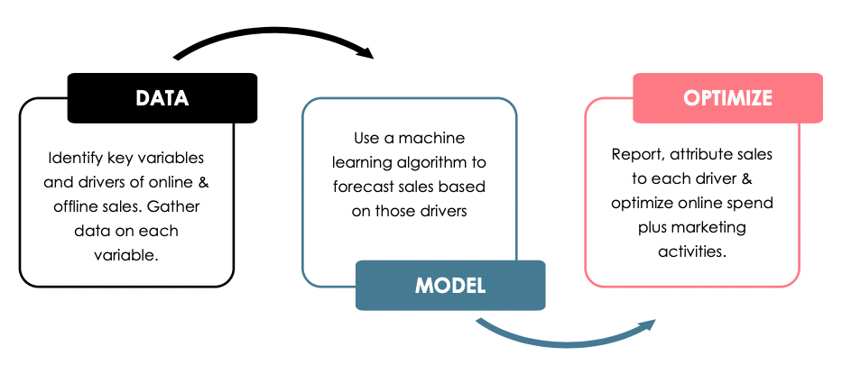

Marketing Mix Modelling
Measure effectiveness of media plans
What is Marketing Mix Modelling ?
Marketing Mix Modelling uses statiscal analysis to correlate (“attribute”) sales on media investments. Media Mix Modelling (MMM) is a powerful tool when it comes to optimise a media or marketing strategy.
The most common oucome is an understanding of contribution and ROI of each channel (including offline) on sales.

MMM is a method which attributes sales to media strategies, offline included.
MMM is relevant for most questions about media strategy
Marketing mix modelling is both an evaluation and a planning tool.
Evaluation questions answered
- What media is the most effective ? Media has the broadest meaning, we can evaluate the effectivness of all paid, owned and earned media.
- How much sales are “natural” ? (meaning they would happen without any media investment)
- What is the global ROI of paid media investments ?
- What is the ROI per channel ?
- What is the optimal level of investment ? …

Planning & optimisation tool
Once the ROI per channel is done, we are able to make scenarios and choose the optimum in terms of investments

The only media measurement framework fully GDPR compliant
You may use digital marketing attribution tools, which tracks consumers from impression to conversion. Those techniques are at best biased, at worst illegal. We don’t use any personal data to track media ROI : we just look at business data such as media investments and number of sales.
How it works.
We have a clear process that include several stages : - Understanding of media plans and data : we identify together what drives sales, in the media, marketing, business and contextual perspective - We use data science to model the dependant variable (sales or revenue) with the independant variable, identified in the previous step - We use those insights and look optimisation perspectives of your budget.

A continuous process
Traditionnaly, MMM are long run projects. We built a platform allowing to refresh with fresh data every two weeks or every month Therefore, the Marketing Mix Modeling can be used in a standard digital marketing process (i.e. bi-weekly reviews)
Why Lykta is the best partner to conduct such anaysis
Media knowledge is required
A perfect understanding of all media metrics is required to analyse and process media data. You don’t want to mix gross digital investments with TV net investsments which containts your media agency fee.
We have experience in media portfolio management, both online & offline.
Media agencies and publishers (GAFA) are judge and parties in Attribution.
Attribution and ROI measurement is most often driven by media agencies or media partners such as Google. But remuneration of both depends from advertiser’s media investment. There is a clear conflict of interest. How can they advice you not to invest, or decrease investments if required ? How to be sure they don’t receive incentives or surcommissions depending on the media plan ? Our main concern is to guide you in your best interest. Our remuneration is the same, whether you invest or not. Therefore, our transparency is total.